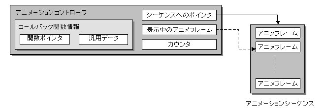

Animation Controller Overview
Conceptual Diagram

Description
The Animation Controller controls the playback of cell and multicell animations.
Internal Data of Animation Controller
Animation Frame Being Displayed
The pointer to the animation sequence data currently being played is stored. The Controller has the information defining the animation stored in the animation sequence. The animation sequence data exists in the animation data (.nanr and .nmar files) and is read from the main memory. The animation data is static and cannot be rewritten.
Counter
The pointer that points to the frame data for the currently playing animation is stored in the counter. Animation frame data refers to information such as the data number of the cell or multicell displayed in that time period.
Playback Speed
The playback speed is the information needed to change the animation playback speed. The animation playback speed can be set. Setting a negative value allows reverse playback (there is a method for setting a reverse playback flag).
Callback Function Information
The animation controller supports the calling of callback functions using the different timing settings of animation playback. Therefore, the animation controller maintains the 4 bytes of user data passed to the callback function and the callback function pointer as a data member.
See Also
None.
Revision History
12/06/2004 Initial version.